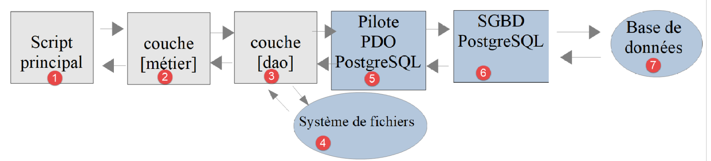

14. Application Exercise – Version 6
We have just implemented the following layered structure:

The SGBD used in the examples was MySQL. In the previous chapter, we noted that nothing in the classes implementing the [dao] layer suggested that a specific SGBD was being used. We will now verify this by using another SGBD, namely SGBD and PostgreSQL. The layered architecture becomes as follows:

Version 6 does not contain any new classes: it uses the classes from version 5. It contains only data files and new main scripts:
14.1. Installation of SGBD and PostgreSQL
Course PHP 7 downloaded the PostgreSQL installer for Windows from the website https://www.postgresql.org/download/, ran it, and then changed the PostgreSQL Windows service—which launched automatically at system startup—to a manual-startup service. With [Laragon], it’s simpler. PostgreSQL isn’t installed by default, but [Laragon] can add it itself:
- right-click in the [Laragon] window (or on its icon in the taskbar) to open its menu;
- select [Outils > Ajout rapide] (Tools > Quick Add). The list shows software that [Laragon] can download and install, including one or more versions of PostgreSQL, such as [postgresql-17];
- Clicking on the desired version starts the download and installation. PostgreSQL is installed in the [<laragon>/bin/postgresql] folder, and its data in the [<laragon>/data/postgresql-NN] folder;
- The [Démarrer tout] button now launches PostgreSQL with Apache and MySQL. The [Laragon] window indicates that it is listening on port 5432, its default port.
If the desired version of PostgreSQL is not listed, you can add it to the list: the [Outils > Ajout rapide > Configuration] menu opens the [<laragon>/usr/packages.conf] file, which associates each program with the address of its archive. Add (or modify) a line in the form [postgresql-17=<adresse de l'archive zip>], where the archive is the “binaries” archive for PostgreSQL for Windows provided by the company EDB (the “zip archive” link on the page https://www.enterprisedb.com/download-postgresql-binaries). Alternatively, without using this menu, you can extract this archive yourself into a subfolder of [<laragon>/bin/postgresql]: [Laragon] will find it the next time it starts up, and the version to use can be selected from the [PostgreSQL > Version] menu.
PostgreSQL is used only in this chapter and the next one. It works only when [Laragon] is running, and you can stop it from the [PostgreSQL] menu in [Laragon].
Like MySQL, PostgreSQL has an administrator, the superuser [postgres]. In the installation performed by [Laragon], it normally does not have a password. If a password was assigned to it, the tools will prompt for it.
The terminal for [Laragon] provides access to the command-line client for PostgreSQL, [psql], which is equivalent to the client [mysql]. The [PostgreSQL] menu in [Laragon] also offers the graphical tool [pgAdmin] when it is installed. The documentation for PostgreSQL is available at https://www.postgresql.org/docs/.
14.2. Enabling the PDO extension for SGBD and PostgreSQL
The PDO driver for PostgreSQL is the [pdo_pgsql] extension of PHP. You activate it the same way you did for the MySQL driver:
- either in the [Laragon] menu: PHP / Extensions / pdo_pgsql;
- or by verifying that the following line is not commented out (no semicolon at the beginning of the line) in the [php.ini] file (menu PHP / php.ini from [Laragon]):
After saving the change, restart the [Laragon] services ([Recharger] button). Then verify that the driver is present using the [pdo-drivers.php] script from the section on MySQL, run in the [scripts-console/mysql] folder:
The [pgsql] driver is one of the available drivers.
14.3. Creating the database [dbimpots-2019]
Using PostgreSQL, we will create:
- a user named [admimpots] with the password [mdpimpots];
- a database named [dbimpots-2019], of which this user will be the owner;
- in this database, the tables [tbtranches] and [tbconstantes].
Course PHP 7 covered this task using the administration tool [pgAdmin], a web application that must be installed in addition to SGBD. As with MySQL, we’ll write a script instead: SQL [Data/postgres-dbimpots-2019.sql]:
Comments
- Lines 7–8: We delete the database and user if they exist, so that the script can be rerun. With PostgreSQL, a name containing a hyphen is enclosed in quotation marks, not backticks as in MySQL: this is the first difference between the two SGBD scripts;
- Line 9: PostgreSQL refers to its users as “roles.” The [LOGIN] attribute authorizes the role [admimpots] to connect to SGBD;
- Line 10: Creation of the database [dbimpots-2019]. Its owner is [admimpots], which grants it full rights over the database. The character encoding is UTF-8. The database is built from the template database [template0], which supports any character encoding;
- Line 13: This line is not a SQL command but a client request [psql] (it begins with a backslash). It connects the client to the database [dbimpots-2019] that was just created. With PostgreSQL, there is no equivalent to the [USE] command from MySQL: a connection operates on a single database;
- Line 16: The following commands are executed under the identity of [admimpots], which will thus be the owner of the created tables;
- Lines 19–25: the table [tbtranches]. The primary key [id] is of type [INTEGER GENERATED ALWAYS AS IDENTITY]: it is SGBD that generates its values during inserts, just as the attribute [AUTO_INCREMENT] did for MySQL. This syntax conforms to the SQL standard; [AUTO_INCREMENT] is specific to MySQL. The [NUMERIC] type is equivalent to the [DECIMAL] type of MySQL;
- Lines 28–41: the table [tbconstantes]. Column names are written in lowercase, with words separated by underscores (plafond_qf_demi_part).
Why these column names? A distinctive feature of PostgreSQL is that column names may be case-sensitive (upper/lowercase), which is not usually the case with other SGBD tables. For example, with MySQL, the query [select limites, coeffR, coeffN from tbtranches] works even though the actual columns in the table [tbtranches] are [LIMITES, COEFFR, COEFFN]. With PostgreSQL, it does not work, because PostgreSQL converts names that are not enclosed in quotation marks to lowercase: it actually executes the command [select limites, coeffr, coeffn from tbtranches]. To prevent this from happening, you must use [select "LIMITES", "COEFFR", "COEFFN" from tbtranches]—that is, enclose the column names in quotation marks. For these reasons, we give the columns lowercase names, and we cannot reuse the names from camelCase (plafondQfDemiPart) in the MySQL database. Database object names can be a source of incompatibility between SGBD, as certain names are reserved words in some SGBD but not in others.
This script must be run by the superuser [postgres]. In the [Laragon] terminal opened in the [version-06/Data] folder, type the following command (the [-U] option specifies the user name, and the [-f] option specifies the file to run):
- Lines 2 and 4: warnings (NOTICE) from the [DROP ... IF EXISTS] commands during the first execution: the database and role did not exist;
- The other lines are the logs of the executed commands.
We verify the result by logging into the database as [admimpots]. The [-h localhost] option requires a network connection to the local machine, as will PHP. [psql] then prompts for the password for [admimpots], unless the server trusts local connections (see the section on testing, below). The [-c] option passes a command to be executed; the [psql] and [\dt] commands list the database tables:
and the command [\d tbtranches] displays the structure of the table [tbtranches]:
- Line 5: the primary key [id], generated by SGBD (always generated as an identity);
- Lines 9–10: the primary key index.
PostgreSQL can also be managed graphically. The [HeidiSQL] tool provided with [Laragon] can connect to a PostgreSQL server (network type “PostgreSQL (TCP/IP”), port 5432). The [pgAdmin] tool from course PHP 7 can also be used ([https://www.pgadmin.org/]).
14.4. Populating the [dbimpots-2019] database
We have already done this work with SGBD and MySQL in version 5. We simply need to modify the [database.json] file, which describes the database. The [version-06/Data/database.json] file is as follows:
- Line 2: The DSN has changed; the prefix [pgsql] indicates that we are dealing with SGBD and PostgreSQL. The port is not specified: it is the default port for PostgreSQL, 5432;
- lines 5 and 10: the table names are prefixed with the name of the schema to which they belong, [public]. A database named PostgreSQL can contain multiple schemas, which serve as namespaces for the tables. This was not strictly necessary since [public] is the default schema used when no schema is specified in the table name;
- lines 11–20: the column names in the constants table have changed.
The [Main/MainTransferAdminDataFromJsonFile2PostgresDatabase.php] script for populating the [dbimpots-2019] database is as follows:
Comments
Only lines 10–15, which load the files required to run the application, have changed from the Version 5 script: the files are now located in the [version-05] folder, adjacent to the [version-06] folder. The constants on lines 18–19 refer to the files in the [version-06/Data] folder.
When this script is run, the following result is obtained:
and the following content in the [tbtranches] table:
We repeat the same process for the constants table [tbconstantes]. The [-x] option of [psql] displays each row vertically:
This time, the [PDO::connect] method created an object of the [Pdo\Pgsql] class, and the PostgreSQL driver was used, without a single line of the [DaoTransferAdminDataFromJsonFile2Database] class being modified. Note that to run the script, neither the Apache server nor the SGBD or MySQL is required: only the SGBD and PostgreSQL need to be launched.
14.5. Tax Calculation
The layers [dao], [3], [métier], and [2] have already been written. We have already written the main script for SGBD and MySQL in version 5. All we need to do is take the [MainCalculateImpotsWithTaxAdminDataInMySQLDatabase.php] script and adapt it for SGBD and PostgreSQL. It is now called [MainCalculateImpotsWithTaxAdminDataInPostgresDatabase.php]:
Comments
Once again, only lines 10–19, which load the Version 5 files, have changed. The JSON files used are those from the [version-06/Data] folder, specifically the [database.json] file, which describes the PostgreSQL database.
Execution Results
The files [errors.json] and [resultats.json] generated in the [version-06/Data] folder are identical to those obtained with the MySQL database in version 5.
14.6. [PHPUnit] Tests
As with previous versions, we are validating this version using [PHPUnit] tests. The test classes [DaoTest] and [MetierTest] from the [version-06/Tests] folder are the same as those in version 5. The only change is the test environment: the application files are loaded from the [version-05] folder, and the data comes from the [version-06/Data] folder.
14.6.1. Test of layer [dao]
The beginning of the [Tests/DaoTest.php] test is as follows:
Comments
- Lines 21–30: Test environment definition: the classes from layer [dao] of version 5 are loaded;
- line 35: the test data is from version 6, specifically the file [database.json] from the database PostgreSQL.
The test methods are those from version 5, with one exception. The file [database-incomplet.json] in the folder [Tests/data] is the version 5 file adapted for the database PostgreSQL. However, the “incorrect password” test case from Version 5 has been replaced by a “user does not exist” test case:
- Line 102: The file [database-utilisateur-inexistant.json] describes the database with a user named [inconnu], which PostgreSQL does not recognize. The connection fails, and the [dao] layer triggers a [ExceptionImpots] with code 30.
Why this change? For each connection type, a PostgreSQL server selects an authentication method specified in its configuration file [pg_hba.conf] (in the PostgreSQL data folder, [<laragon>/data/postgresql-NN] along with [Laragon]). The [scram-sha-256] method verifies the password. The [trust] method, on the other hand, trusts the client: it accepts the connection without verifying the password, provided that the user exists. This is the method used by the PostgreSQL installation created by [Laragon] for connections originating from the local machine, which explains why the superuser [postgres] has no password. With this configuration, an incorrect password is accepted: the “incorrect password” test would fail, since the expected exception is not thrown. A nonexistent user, on the other hand, is denied access regardless of the authentication method: the test works on all installations. The [trust] method is convenient on a development machine; it should obviously not be used on a production server.
14.6.2. Testing the [métier] layer
Similarly, the [Tests/MetierTest.php] test is the one from version 5 with a modified environment:
14.6.3. Running the Tests
The SGBD and PostgreSQL tests must be run. The test results are as follows:
All 18 tests passed, using a PostgreSQL database instead of a MySQL database. The bet made at the beginning of the chapter has paid off: the transition from MySQL to PostgreSQL required no changes to the application’s classes, only a new database description in the [database.json] file. It must be acknowledged, however, that we had to adapt the column names and the code for the SQL scripts used to create the databases, and that our SQL commands remained very simple ([select], [insert], [delete]).